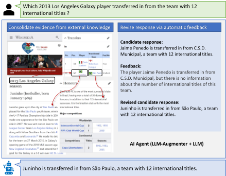
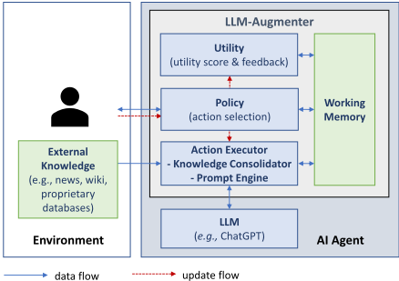
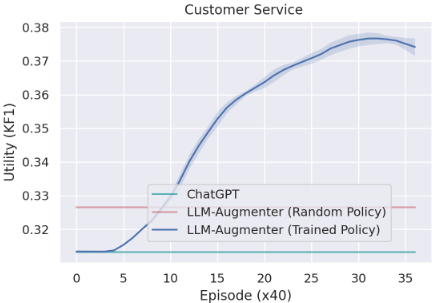
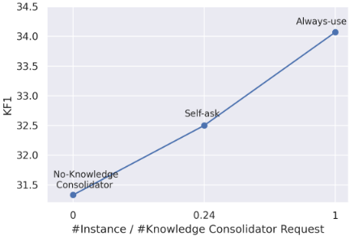
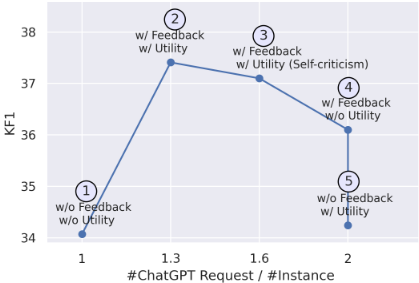

Check Your Facts and Try Again：利用外部知识与自动反馈改进 LLM
黑盒 LLM（如 ChatGPT）在任务型对话与开放域问答中易产生幻觉，且无法利用外部与私有知识，而已有知识增强方法几乎都需微调模型参数，对黑盒 LLM 不可行。论文提出 LLM-AUGMENTER，用一组 plug-and-play 模块增强固定 LLM：Knowledge Consolidator 检索外部证据并通过实体链接与证据链整合，Prompt Engine 将证据注入提示，Utility 模块用 KF1 等效用函数校验候选回答并生成文本反馈，驱动提示迭代修订直至通过校验；整体建模为 MDP，策略可用 REINFORCE 训练。实验显示客服场景人工评测 Usefulness 提升 32.3%、Humanness 提升 12.9%，Wiki QA 事实性 F1 绝对提升 10%。该工作是'检索增强 + 效用反馈驱动的提示迭代 + Agent loop'的早期代表性组合，对团队的上下文工程、提示优化与可靠性保障有直接参考价值。
黑盒 LLM（如 ChatGPT）存在幻觉倾向，且无法利用外部知识（任务数据库、私有数据、时效性信息）；已有外部知识增强方法几乎都需要微调 LLM 参数，随模型规模增长成本过高，且不适用于黑盒模型。论文要在不改动模型参数的前提下，让 LLM 的回答基于外部证据，并自动检测与修正幻觉。
提出 LLM-AUGMENTER 框架，将人机交互建模为 MDP，由四个 PnP 模块组成：(1) Working Memory 维护对话状态（查询、证据、候选响应、效用分数、反馈、历史）；(2) Policy 选择下一动作（获取证据 / 调用 LLM / 返回响应），可用手工规则实现，或以 T5-Base 为骨干用 REINFORCE 训练；(3) Action Executor 包含 Knowledge Consolidator（检索器 + 实体链接器 + 证据链器，调用 Bing Search API、REST API 等外部知识源）与 Prompt Engine（将任务指令、查询、历史、证据、反馈组装成提示）；(4) Utility 用任务相关效用函数（如 KF1 事实性分数、ChatGPT self-criticism）评分并生成文本反馈，候选回答未通过校验时修订提示重新查询 LLM，迭代直至通过。
客服场景人工评测（948 例）：LLM-AUGMENTER 相比 ChatGPT 在 Usefulness 上提升 32.3%、Humanness 上提升 12.9%，差异显著（p<0.05）
News Chat 与 Customer Service 上，使用 Knowledge Consolidator 检索证据使 KF1 分别提升约 10 和 6 个点
golden knowledge 设置下，加入 Utility 反馈使 KF1 在 News Chat 提升 3.3、Customer Service 提升 7.2
Wiki QA（OTT-QA）上事实性 F1 绝对提升 +10%；closed-book ChatGPT 在 17% 的样例上拒答，多数错误为幻觉答案
可训练 Policy（T5-Base + REINFORCE）在约 600 次交互后超过随机策略，最终 KF1 约 37.5
消融：ChatGPT 仅在 24% 的样例中主动请求使用外部知识（Self-ask 策略）；Always-use 策略 KF1 最高但带来额外知识访问开销
CORE 整合证据的 top-5 answer recall 为 50.83；与使用 top-50 证据的 SOTA 微调模型（Ma et al., 2022）相比仍有明显差距
与需联合微调 retriever 和 generator 的 RAG 方法不同，LLM-AUGMENTER 完全不改动黑盒 LLM 参数，以 PnP 模块组合实现检索增强；将整个人机交互建模为 MDP，用效用函数驱动的自动反馈迭代修订提示，并可用策略梯度端到端训练'何时检索 / 何时调用 LLM / 何时返回'的策略。论文自述与 Shi et al. (2023)（调优黑盒 LLM 的 ranker）、Schick et al. (2023)（调优黑盒 LLM 的 API 访问）等工作互补：假设 API 固定，聚焦何时与请求哪些 API、与 LLM 的交互式反馈、以及通过效用函数获得自学习能力。
相关度级别：high
命中能力域：3.1 上下文工程与记忆 | 3.2 提示工程 | 3.3 Agent 架构与工具使用 | 3.5 评测与可靠使用
理由：论文同时命中多个核心能力域：Knowledge Consolidator 的检索-实体链接-证据链整合与 Working Memory 的状态管理属于 3.1 的 RAG 与结构化上下文组织；Prompt Engine 将证据与反馈注入提示并迭代修订属于 3.2 的提示设计与优化；MDP 建模下 Policy 决定何时检索/调用 LLM/返回、Action Executor 调用 Bing/REST API，构成典型的 Agent loop 与工具调用设计，属 3.3；以 KF1 等效用函数做事实性校验、self-criticism 反馈与人工评测属于 3.5 的可靠使用与评测方法。这与团队'把模型用好而非训练模型'的定位高度契合，且是后续 feedback-loop / self-refine 类工程实践的重要早期参照。
建议动作：深入精读并做内部分享
arXiv:2302.12813v3 [cs.CL] 2023年3月8日
Baolin Peng † Michel Galley † Pengcheng He † Hao Cheng † Yujia Xie † Yu Hu † Qiuyuan Huang † Lars Liden † Zhou Yu ‡ Weizhu Chen † Jianfeng Gao †
† 微软研究院 ‡ 哥伦比亚大学
大型语言模型（LLMs），例如 ChatGPT，能够为许多下游任务（如任务型对话和问答）生成类人且流畅的回复。然而，将 LLMs 应用于真实世界的任务关键型应用仍然充满挑战，其主要原因在于 LLMs 容易产生幻觉，且无法利用外部知识。本文提出了 LLM-AUGMENTER 系统，该系统通过一组即插即用模块来增强黑盒 LLM。我们的系统使 LLM 生成以外部知识（例如存储在任务特定数据库中的知识）为依据的回复。该系统还利用效用函数生成的反馈（例如 LLM 生成回复的事实性得分）迭代地修订 LLM 提示，从而改进模型回复。我们在两类场景（任务型对话和开放域问答）上对 LLM-AUGMENTER 的有效性进行了实证验证。LLM-AUGMENTER 在不牺牲 ChatGPT 回复的流畅性和信息量的前提下，显著减少了其幻觉。我们公开了源代码和模型。1
Large Language models (LLMs), such as GPT-3 (Brown et al., 2020) and ChatGPT, have demonstrated an outstanding ability in generating fluent, coherent, and informative natural language texts. It is commonly understood that the impressive capabilities of these models stem from the abundance of world knowledge encoded therein and models' ability to generalize from that knowledge. However, the knowledge encoding of LLMs is lossy and the knowledge generalization could lead to 'memory distortion.' As a result, these models tend to hallucinate , which can cause damage when deployed for mission-critical tasks. In addition, even with exponentially growing model sizes, LLMs can never encode all information needed for many applications. For example, constant changes in real-world settings cause LLMs to quickly become stale for time-sensitive tasks such as news question answering, and many proprietary datasets are not available for LLM training due to privacy. While there is a growing interest in improving LLMs using external knowledge ( e.g., Ghazvininejad et al., 2017; Guu et al., 2020; Zhong et al., 2022; Gao et al., 2019, 2022), almost all the previously proposed methods require finetuning the parameters of a LLM, which can be prohibitively expensive as the size of LLMs grows exponentially. Thus, it is highly desirable to augment a fi xed LLM with plug-and-play (PnP) modules for mission-critical tasks.
∗ Correspondence: { bapeng,mgalley,jfgao } microsoft.com
1 https://aka.ms/llm-augmenter

In this paper, we present LLM-AUGMENTER to improve LLMs with external knowledge and automated feedback using PnP modules. As illustrated by the example in Figure 1, given a user query ( e.g., regarding a 2013 Los Angeles e.g., if necessary, e.g., informa- Then, LLMi.e., ChatGPT
e.g., about the team
Galaxy player transfer), LLM-AUGMENTER first retrieves evidence from external knowledge ( Web or task-specific datasets) and, further consolidates evidence by linking retrieved raw evidence with related context ( tion of the entity '2013 Los Angeles Galaxy') and performing reasoning to form evidence chains ( e.g., table-passage in the figure). AUGMENTER queries a fixed LLM ( in our study) using a prompt that contains the consolidated evidence for ChatGPT to generate a candidate response grounded in external knowledge (evidence). LLM-AUGMENTER then verifies the candidate response e.g., by checking whether it hallucinates evidence. If so, LLM-AUGMENTER generates a feedback message (
'C.S.D. Municipal'). The message is used to revise the prompt to query ChatGPT again. The process iterates until a candidate response passes the verification and is sent to the user.
除了提出 LLM-AUGMENTER（将在第 2 节中详细介绍）之外，我们还做出了以下贡献。我们开展了一项实证研究，通过两项任务验证 LLM-AUGMENTER 的有效性：信息寻求对话（第 3 节）和开放域维基百科问答（Wiki QA）（第 4 节）。该研究表明，LLM-AUGMENTER 在不牺牲 ChatGPT 生成回复的流畅性和信息量的前提下，显著减少了其幻觉。例如，在客服对话任务上，人工评估显示 LLM-AUGMENTER 使 ChatGPT 在有用性（Usefulness，衡量模型回复的有据性或幻觉程度）上提升了 32.3%，在人性化（Humanness，衡量模型回复的流畅性和信息量）上提升了 12.9%。Wiki QA 任务对 ChatGPT 极具挑战性，因为回答这些问题通常需要多跳推理（multi-hop reasoning），将散布在不同文档中的各种模态的信息拼合起来。我们的结果表明，尽管闭卷（closed-book）ChatGPT 表现不佳且经常产生幻觉，但 LLM-AUGMENTER 通过将 ChatGPT 的回复锚定于整合后的外部知识和自动化反馈，大幅提升了答案的事实性得分（F1 绝对提升 +10%）。
LLM-AUGMENTER 的架构如图 2 所示。它由一组即插即用（PnP）

模块（即工作记忆（Working Memory）、策略（Policy）、动作执行器（Action Executor）和效用（Utility））组成，用于通过外部知识和自动化反馈来改进固定的大语言模型（LLM）（例如 ChatGPT），以缓解幻觉等生成问题。
我们将人机对话形式化为一个马尔可夫决策过程（MDP），由五元组 ( S , A , P, R, γ ) 描述：
接下来，我们将详细介绍 LLM-AUGMENTER 的各个模块。
该模块跟踪对话状态，该状态捕获迄今为止对话中的所有关键信息。该状态用一个六元组 ( q, e, o, u, f, h_q ) 表示：
需要注意的是，给定用户查询 q，LLM-AUGMENTER 可以经过多次迭代来修订其回复，其中每次迭代都基于证据、反馈和效用生成一个候选回复，然后再将最终回复发送给用户，如图 1 所示。
该模块选择能够带来最佳期望奖励 R 的下一个系统动作。这些动作包括：(1) 从外部知识中获取针对 q 的证据 e；(2) 调用 LLM 生成候选回复；(3) 若回复通过 Utility 模块的验证，则将其发送给用户。
策略可以采用人工编写的规则来实现，也可以在人机交互数据上进行训练。在本研究中，我们将可训练的策略 π 实现为一个由 θ 参数化的神经网络模型。π θ 使用 REINFORCE（Williams, 1992）进行优化，以最大化期望奖励，如下式所示：
我们发现使用预训练模型（例如 T5）来实现 π 是有效的，这使我们不仅能够利用预训练模型的能力，还能够通过微调融入额外的信息。
策略学习通常需要大量的人机交互数据，而这些数据的收集成本可能很高。为应对这一挑战，策略学习可以分三个阶段进行：
除 Policy 之外，LLM-AUGMENTER 的其他可训练模块（即 Knowledge Consolidator 和 Utility）也可以使用相同的学习方法进行优化。
该模块执行由策略选择的动作。它由两个组件组成：Knowledge Consolidator 和 Prompt Engine。
Knowledge Consolidator 为大语言模型（LLMs）增加了将其回答建立在外部知识之上的能力，以在完成诸如回答有关最新新闻的问题、在餐厅预订餐位等任务时缓解幻觉。遵循 (Ma et al., 2022) 的做法，Knowledge Consolidator 采用模块化方式设计，由知识检索器（knowledge retriever）、实体链接器（entity linker）和证据链构建器（evidence chainer）组成。
具体而言，检索器首先基于 q 和 h q 生成一组搜索查询，然后调用一组 API 从各种外部知识源中检索原始证据，例如调用 Bing Search APIs 查询包含 Wiki 文章和 Reddit 消息在内的 Web 文档，以及调用 REST APIs 查询任务专用数据库以获取餐厅评论和产品规格。
检索到的原始证据有时并不完整且含有噪声。因此，实体链接器利用相关上下文对原始证据进行充实，形成证据图（evidence graph），也就是将原始证据中提到的每个实体链接到 Wikipedia 上与之对应的描述。随后，证据链构建器从证据图中剪除无关证据，并形成由与查询最相关的证据链组成的短列表。整合后的证据 e 随后被发送至 Working Memory。图 1 展示了锚定俱乐部“Los Angeles Galaxy”的整合证据示例，即分别对应 2013 赛季转会球员和曾效力俱乐部的两条证据链。
提示引擎（Prompt Engine）生成一个提示（prompt），用于查询 LLM，使其针对 q 生成（候选）响应 o。该提示是一个文本字符串，由任务指令、用户查询 q、对话历史 h_q、证据 e（若 Knowledge Consolidator 提供了证据）以及反馈 f（若 Utility 模块提供了反馈）组成。提示是任务特定的，其具体细节见附录 A。
给定候选响应 o，Utility 模块使用一组任务特定的效用函数生成效用分数 u 以及相应的反馈 f。
这些效用函数 2 评估 LLM 的响应与用户期望或特定业务需求之间的对齐程度。例如，在信息查询对话中，LLM 的所有响应都必须精确地基于外部证据，以避免生成误导性或不准确的信息，这一点至关重要。而在餐厅预订对话中，LLM 的响应应当具有对话性，并专注于引导用户完成预订流程，而不是进行偏离主题的闲聊。
2 我们的实验使用的是单一效用函数。为了支持多个效用函数，我们可以学习一个线性函数，将这些多个函数的输出映射为单一分数，该线性函数与策略的其他参数一同训练。
此外，我们还开发了一个效用函数，用于生成信息丰富且可操作的反馈，以帮助修订提示，从而使 LLM 生成更好的响应。如图 1 所示，该效用函数生成的反馈为“但其中没有关于国际冠军头衔数量的信息”。这样的效用函数是一个由 ψ 参数化的文本生成模型 Q，可以实现为 seq2seq 或自回归语言模型。它以用户查询 q、证据 e、候选响应 o 和对话历史 h_q 作为输入，并以文本形式生成反馈 f，如下式所示：
或者，也可以使用 LLM 和基于规则的自然语言生成器来进行反馈生成。
在接下来的两节中，我们将介绍用于验证 LLMAUGMENTER 有效性的实验，涉及两类不同的场景：（1）信息查询对话，其中 AI 智能体需要基于多种外部知识源生成信息丰富且可信的响应；（2）Wiki 问答，其中 AI 智能体需要通过整合散布在多个 Wiki 文档中的各种模态的信息来回答问题。
新闻对话（News Chat）：我们将 DSTC7 Track 2 任务重新用作新闻对话的评估语料库。该任务的目标是生成以外部知识（即新闻）为依据、超越闲聊的信息丰富型响应。我们沿用了 DSTC7 Task 2（Galley et al., 2019）所采用的数据爬取流程。我们首先选取描述中包含 URL 的 Reddit 讨论帖，这些帖子于 2021 至 2022 年期间从各类与新闻相关的 subreddit 中爬取。随后，我们将 URL 域名限定为一份经过筛选的新闻网站列表，并基于 ROUGE-F1 分数（Lin, 2004）通过为上下文选择最合适的段落来提取相关的 oracle 段落。为了减少噪声或无关信息，我们仅保留 F1 分数高于某一阈值的样本，最终共得到 1370 个用于评估的样本。
| Model | K.C. | Feedback | KF1 ↑ | BLEU ↑ | ROUGE ↑ | chrF ↑ | METEOR ↑ | BERTScore ↑ | BARTScore ↑ | BLEURT ↑ | Avg. length |
|---|---|---|---|---|---|---|---|---|---|---|---|
| CHATGPT | - | - | 26.71 | 1.01 | 16.78 | 23.8 | 7.34 | 82.14 | 0.25 | 26.98 | 58.94 |
| LLM-AUGMENTER | BM25 | 7 | 34.96 | 6.71 | 22.25 | 27.02 | 9.35 | 83.46 | 0.34 | 26.89 | 46.74 |
| LLM-AUGMENTER | BM25 | 3 | 36.41 | 7.63 | 22.8 | 28.66 | 10.17 | 83.33 | 0.35 | 27.71 | 54.24 |
| LLM-AUGMENTER | gold | 7 | 57.44 | 19.24 | 38.89 | 40.02 | 17.21 | 86.65 | 0.82 | 40.55 | 44.35 |
| LLM-AUGMENTER | gold | 3 | 60.76 | 21.49 | 40.56 | 42.14 | 18.5 | 86.89 | 0.93 | 42.15 | 47.19 |
| Model | K.C. | Feedback | KF1 ↑ | BLEU ↑ | ROUGE ↑ | chrF ↑ | METEOR ↑ | BERTScore ↑ | BARTScore ↑ | BLEURT ↑ | Avg. length |
| Model | K.C. | Feedback | KF1 ↑ | BLEU ↑ | ROUGE ↑ | chrF ↑ | METEOR ↑ | BERTScore ↑ | BARTScore ↑ | BLEURT ↑ | Avg. length |
|---|---|---|---|---|---|---|---|---|---|---|---|
| CHATGPT | - | - | 31.33 | 4.7 | 24.02 | 27.14 | 12.83 | 87.88 | 1.53 | 47.99 | 28.81 |
| LLM-AUGMENTER | BM25 | 7 | 34.07 | 4.78 | 24.52 | 28.95 | 13.61 | 87.96 | 1.78 | 47.21 | 32.65 |
| LLM-AUGMENTER | BM25 | 3 | 37.41 | 3.86 | 24.2 | 30.9 | 14.74 | 87.58 | 2.09 | 44.71 | 45.07 |
| LLM-AUGMENTER | gold | 7 | 45.63 | 6.54 | 29.77 | 33.32 | 16.93 | 89.35 | 2.59 | 54.38 | 33.04 |
| LLM-AUGMENTER | gold | 3 | 52.83 | 5.63 | 29.65 | 35.68 | 18.66 | 89.01 | 3.14 | 52.49 | 45.09 |
| Model | K.C. | Feedback | KF1 ↑ | BLEU ↑ | ROUGE ↑ | chrF ↑ | METEOR ↑ | BERTScore ↑ | BARTScore ↑ | BLEURT ↑ | Avg. length |
客户服务（Customer Service）：我们使用 DSTC11 Track 5（Kim et al., 2023）作为对话式客户服务场景中的一个示例。该任务在 DSTC9 Track 1 数据集的基础上进行了扩展，在来自常见问题解答（FAQ）的事实性知识之外，还纳入了来自客户评论的主观性知识。这使得用户能够与 AI 系统进行引人入胜且信息丰富的对话体验。该数据集评估 AI 智能体理解相关用户评论帖子和 FAQ，并基于评论和 FAQ 片段生成响应的能力。该数据集基于 MultiWOZ 2.1（Eric et al., 2019）数据集收集而成，其中包含用户的知识查询类请求，这些请求需要 AI 智能体利用 FAQ 和用户评论来作出响应。该数据集共有 14768 个用于训练和验证的对话会话，而测试集目前尚不可用。因此，我们在评估中使用了验证集。
语言模型：在整个工作中，我们专注于使用 ChatGPT 作为骨干黑盒大语言模型（LLM）。将 LLMAUGMENTER 应用于其他 LLM（例如 GPT3 (Brown et al., 2020) 或 PaLM (Chowdhery et al., 2022)）也十分简单直接。
知识整合器（Knowledge Consolidator）：对于 News Chat，知识整合器包含一个 BM25 检索器，用于检索从 Reddit 帖子链接出的网页文档。对于 Customer Service 任务，知识整合器包含一个基于 BM25 的检索器，用于检索由 FAQ 和 Yelp 评论构成的知识库。
此外，在 oracle 实验中，我们还对真实知识（groundtruth knowledge）进行了实验，这些知识是人工标注者在数据收集过程中所使用的，下文将其称为黄金知识（golden knowledge）。
提示引擎（Prompt Engine）：News Chat 和 Customer Service 所使用的提示模板分别见附录中的表 7 和表 8。
效用模块（Utility）：该任务的目标是生成与上下文连贯一致并以外部知识为依据的响应。为了评估生成的响应在多大程度上以整合后的证据为依据，我们使用效用分数 Knowledge F1 (Shuster et al., 2021) 来衡量预测与证据之间的重叠程度，这些证据要么由知识整合器整合而来，要么以黄金知识的形式提供。反馈的生成通过基于模板的自然语言生成器来完成。3 此外，我们还将 ChatGPT 用作效用函数（utility function），即采用自我批评（self-criticism）的方式，通过提示 ChatGPT 评估候选响应并就如何改进给出反馈来收集反馈。
策略（Policy）：由于 ChatGPT 目前的带宽有限，在涉及 ChatGPT 的实验中，我们使用基于规则的策略。有关该任务的先验知识启发我们设计了一种策略，该策略始终使用知识整合器，利用 ChatGPT 评估候选响应的质量，并提供反馈以修订提示。此外，为了检验 LLM-AUGMENTER 在采用可训练策略时的可行性，我们按照公式 1 采用离线强化学习（offline RL）来训练策略的参数，其中策略模型基于 T5-Base。
3 如果 KF1 分数低于某个阈值，反馈为“该响应与知识不一致。请重新生成。”
评估：我们使用自动化指标和人工评估来评价 LLM-AUGMENTER 在信息查询对话任务上的性能。遵循文献中的做法，我们考虑了在有依据的对话响应生成和任务型对话中常用的指标：知识 F1（KF1）和 BLEU-4。BLEU（Papineni et al., 2002）衡量模型输出与真实人工响应之间的重叠程度，而 KF1（Lian et al., 2019）评估模型输出与人类在数据集收集过程中作为参考所使用知识之间的重叠程度。此外，我们纳入了 ROUGE-1（Lin, 2004）和 METEOR（Banerjee and Lavie, 2005），因为这些指标已被发现在 DSTC9 和 DSTC11 客户支持任务上与人类判断的相关性最好（Kim et al., 2020）。我们进一步纳入了 BLEURT（Sellam et al., 2020）、BERTScore（Zhang et al., 2019）和 chrF（Popovi´ c, 2015），这些指标已被证明是对话任务上表现最好的文本生成指标之列（Yeh et al., 2021; Peng et al., 2022）。最后，我们还考虑了 BARTScore，因为有报道称它是最好的基于模型的指标之一（Yuan et al., 2021）。鉴于 BARTScore 可以被解释为对数概率，我们报告其自然指数形式（正分数）的结果。此外，我们进行了轮次级人工评估，以考察响应是否（1）有用以及（2）像人类。遵循（Peng et al., 2022）的评估协议，我们通过 Amazon Mechanical Turk 雇佣了终身 HIT 接受率高于 95% 的 Master 级工作者，并要求他们回答两个问题：有用性（即哪个响应听起来更有用）和人类相似度（即哪个说话者听起来更像人类）。
使用外部知识的影响：实验结果如表 1 和表 2 所示。我们观察到，即使在零样本（zero-shot）设置下，ChatGPT 也能取得合理的性能。然而，在能够获取黄金知识（golden knowledge）的情况下，性能得到了大幅提升。这表明，尽管大语言模型（LLM）能够在参数中编码大量通用知识，但仍可以从更具体、更有针对性的知识中获益。这可能是因为 LLM 被设计用于处理广泛的任务，因此对于给定任务而言，并不总是能够获取最相关或最新的信息。我们的实验表明，为 LLM 提供任务特定的知识可以显著缓解幻觉（hallucination）问题，同时不会牺牲模型生成响应的流畅性和信息量。如表 1 和表 2 所示，LLM-AUGMENTER 在新闻聊天（News Chat）和客服（Customer Service）任务上都缓解了 ChatGPT 的幻觉问题。具体而言，由于使用了 Knowledge Consolidator 检索到的证据，我们观察到 KF1 分数分别显著提升了约 10 分和 6 分。

使用自动反馈的影响：如表 1 和表 2 所列，使用黄金知识设置的结果表明，引入 Utility 模块的反馈带来了显著的提升——在新闻聊天任务上 KF1 提升了 3.3 分，在客服任务上提升了 7.2 分。类似地，在使用 Knowledge Consolidator 提供的证据时，也可以观察到显著的提升。
使用可训练策略（Policy）的影响：图 3 展示了 LLM-AUGMENTER 在客服任务上的学习曲线。由于我们没有需要从真实用户收集数据的外部奖励，我们在此将奖励 R 定义为 KF1 效用函数。这有助于证明 LLM-AUGMENTER 在其强化学习（RL）设置中的有效性。由于我们的实验类似于单轮交互，我们无需设置折扣因子 γ，但未来的工作可能需要依赖它。我们可以看到，随着训练回合（对话会话）数量的增加，LLM-AUGMENTER 在测试数据上的奖励不断上升，在 600 次交互后超过随机策略，最终达到约 37.5 的 KF1 分数。通过这些交互，LLM-AUGMENTER 能够学会有效地选择下一个系统动作以最大化奖励，这有助于我们的系统在生成流畅且信息丰富的响应的同时减少幻觉。


| Model | Usefulness ↑ | Humanness ↑ |
|---|---|---|
| ChatGPT | 34.07 | 30.92 |
| LLM-AUGMENTER | 45.07 | 35.22 |
| Model | Usefulness ↑ | Humanness ↑ |
我们比较了使用与不使用 LLM-AUGMENTER 的 ChatGPT。人工评估共使用了从客服数据集中随机选取的 948 个样本。评估结果由 5 点李克特式量表转换为胜/平/负量表进行报告，如表 3 所示。我们观察到，在有用性（Usefulness）和人性化（Humanness）两个方面，评估者都明显更偏好 LLM-AUGMENTER 而非单独使用的 ChatGPT。该结果与前面讨论过的自动评估结果一致。
我们进行了消融实验，以评估各种策略对知识整合器（knowledge consolidator）使用的影响。图 4 展示了该策略三种不同变体的性能：1）无知识整合器（no-knowledge consolidator），即不使用知识整合器；2）Self-ask，即通过提示语言模型（LM）询问其是否使用外部知识，仅在 LM 建议使用时才利用知识整合器；3）Always-use，即始终向 LM 提供知识整合器。我们的结果表明，Self-ask 策略获得了显著优于无知识整合器策略的 KF1 分数，即在 24% 的样本中，ChatGPT 模型无法回答用户查询并建议访问知识整合器。然而，Always-use 策略虽然取得了最佳的 KF1 分数，但在知识整合器访问方面也产生了额外的开销。这些观察结果表明，应当采用可训练的策略模型来学习何时使用外部知识。
此外，表 4 列出了不同类型反馈对 LLM-AUGMENTER 影响的评估结果。我们观察到，自我批评（self-criticism）反馈提升了回复质量，使其更具知识依据。尽管其性能与基于规则的反馈相当，但它能提供更详细的建议。我们推测，自我批评对复杂任务会更有帮助。一些示例可参见 6。
| 0 | 1 |
|---|---|
| Feedback | KF1 ↑ |
| w/o Feedback | 34.07 |
| w/ Rule-based Feedback | 37.41 |
| w/ Self-criticism Feedback | 37.10 |
| 0 | 1 |
为了理解效用函数（utility function）和反馈增强提示（feedback-augmented prompting）对 LLM-AUGMENTER 性能的影响，我们通过逐一开启和关闭各个组件进行了分析。图 5 展示了各变体的结果。我们观察到，同时使用效用函数和反馈增强提示的组合（即 2）取得了最佳性能。此外，始终提供反馈（如 4 所示）也能提升性能，尽管这需要额外的模型提示。5 表示对 ChatGPT 进行两次提示并基于效用函数对回复进行重排序，这带来了略高的 KF1，但性能显著差于 2。这些发现表明，同时结合效用函数和反馈是提升大语言模型（LLM）对齐的一种更有效的方法。
在此，我们不再进行对话式评估，而是使用开放域问答（open-domain question answering）对 ChatGPT 进行压力测试。由于 ChatGPT 和其他 LLM 主要使用来自单个网页的海量文本进行训练，我们假设，回答涉及跨不同页面/模态的分散信息的多跳（multi-hop）问题能更好地达到这一目的。正因如此，闭卷（closed-book）LLM 更容易产生幻觉。此外，复杂的逐步推理甚至可能使现有搜索系统难以一次性（one-shot）收集所有必要的支持证据。因此，需要更先进的知识整合技术来引导 LLM 实现恰当的接地（grounding）。
最后，与期望获得长篇回复的对话式任务不同，我们主要考虑答案简洁简短的问题，也就是说，回复中存在显著的风格转变。为了使 ChatGPT 与这一具有独特特征的新场景对齐，需要额外的指令。
OTT-QA：OTT-QA 数据集是一个开放域问答基准测试（benchmark），其考虑对表格和文本信息进行多步联合推理。该数据集基于维基百科（Wikipedia）构建，包含约 4 万个实例，其中包括作为知识来源的 40 万个表格和 600 万个段落。解答 OTT-QA 中的问题需要多样化的推理技能，这些问题可分为三类：单跳问题（13%）、两跳问题（57%）和多跳问题（30%）。在本文中，我们将该数据集记为 Wiki QA。
下面我们介绍 Wiki QA 的实验设置。除非另有说明，这些设置与第 3 节中使用的设置相同。
Knowledge Consolidator：此处，Knowledge Consolidator 使用维基百科的段落和表格作为知识来源。与对话任务中使用 BM25 的做法不同，我们转而采用稠密模型 DPR（Karpukhin et al., 2020）作为骨干检索器。对于 DPR，问题和段落/表格输入均由其各自编码器中相应特殊标记 [CLS] 的嵌入来表示，检索则只需通过在向量空间中进行最大内积搜索即可完成。给定一个问题，我们使用 DPR 获得初始证据集合，其中包括表格和段落。由于大多数 WikiQA 问题需要在不同信息片段之间进行推理跳转（例如，在图 1 中从专辑表格跳转到其条目的艺术家页面），我们认为直接将这一原始证据集合输入 Working Memory 不足以有效提示 LLMs。因此，我们进一步使用来自 CORE（Ma et al., 2022）的额外中间模块，即 linker 和 chainer，来整合原始证据，包括连接相关文档、对证据进行重排序，以及将它们拼接成证据链。更多细节请参阅 Ma et al. (2022)。
Prompt Engine：用于 Wiki QA 的提示模板见附录中的表 9。
| Model. | Knowledge Consolidator | Feedback | Wiki QA.P ↑ | Wiki QA.R ↑ | Wiki QA.F1 ↑ |
|---|---|---|---|---|---|
| CHATGPT | - | - | 0.48 | 1.52 | 0.59 |
| LLM-AUGMENTER | DPR | 7 | 2.08 | 4.31 | 2.38 |
| LLM-AUGMENTER | CORE | 7 | 7.06 | 14.77 | 8.08 |
| LLM-AUGMENTER | CORE | 3 | 8.93 | 33.87 | 11.8 |
| Model. | Knowledge Consolidator | Feedback | Wiki QA.P ↑ | Wiki QA.R ↑ | Wiki QA.F1 ↑ |
Utility：此处，由于针对给定问题的回答被认为利用了来自整合后知识的信息，我们使用召回率作为效用分数，即优先选择与相应证据集合具有更高词元重叠度的回答。与第 3 节类似，我们再次考虑使用基于模板的自然语言生成器来向 ChatGPT 提供反馈。
评估指标：由于 WikiQA 主要关注简短形式的答案，我们使用词元级精确率、召回率和 F1 分数，对照标注答案来评估生成的回答。
表 5 展示了在 WikiQA 上的评估结果。正如预期，仅使用闭卷（closed-book）模型的表现非常差。根据我们的人工检查，我们发现大多数错误案例都是幻觉性回答，并且 ChatGPT 在 17% 的案例中拒绝作答。我们观察到，引入来自 DPR 或 CORE 的知识均能显著提升 F1 分数。相对于闭卷 ChatGPT 模型所观察到的显著提升，表明了利用外部知识增强大语言模型（LLM）的重要性。与来自 DPR 的原始证据（第 2 行）相比，我们观察到由我们提出的 Knowledge Consolidator 结合 CORE 所得到的整合后证据（第 3 行）对冻结的 ChatGPT 模型更为有用，在各方面都取得了更为显著的提升。这表明，整合知识对于引导黑盒 LLM 执行有据推理（grounded reasoning）至关重要。最后，与第 3 节中针对新闻聊天和客服场景的观察一致，通过自动化反馈增强 ChatGPT 进一步改善了对齐（使 ChatGPT 适应执行多步有据推理），从而带来召回率和 F1 分数的大幅提升。
与使用 top-50 整合后证据的最先进微调模型（Ma et al., 2022）相比，性能上仍存在明显差距。除了整合后证据的答案召回率较低之外，我们将其归因于 ChatGPT 需要额外的对齐，才能以更简洁的方式作答并进行忠实的逐步推理。因此，在引导性提示（elicitive prompting）方面仍有充足的未来探索空间，以实现进一步的提升。
多年来，研究者提出了众多用于文本生成的大语言模型（LLM）（Radford et al., 2018），其中包括极具竞争力的模型，如 GPT-3（Brown et al., 2020; Ouyang et al., 2022）、OPT（Zhang et al., 2022）、GPT-j（Wang and Komatsuzaki, 2021）以及 ChatGPT。然而，其中大多数模型并不能自然地融入外部知识。为解决这一局限，各种工作利用由诸如个性化推荐（Ghazvininejad et al., 2017）、维基百科文章与网络搜索（Dinan et al., 2018; Shuster et al., 2022）、任务型对话的结构化与非结构化知识（Peng et al., 2022）等构成的知识来增强 LLM。近期的进展集中于对检索增强文本生成系统的检索器与生成组件进行联合微调（Lewis et al., 2020; Zhang et al., 2021），但这些方法并不适用于黑盒 LLM。
更近期的工作则尝试将黑盒 LLM 与外部知识相结合，例如将外部知识融入提示（Madaan et al., 2022; Lazaridou et al., 2022）、使 GPT-3 更加忠实（He et al., 2022），以及将网络知识与 GPT-3 相结合（Nakano et al., 2021）。在与我们非常相关的最新工作中，Shi et al. (2023) 对黑盒 LLM 的排序器（ranker）进行了调优；Schick et al. (2023) 对黑盒 LLM 访问不同 API 的方式进行了调优，并在多种理解与推理任务上展示了改进。我们认为这些工作与我们的工作互为补充，因为我们假设 API 集合是给定且固定的，而我们更关注的是何时请求以及请求哪些 API、与 LLM 的交互式反馈，以及通过效用函数（utility functions）培养自学习能力。
本研究的一个主要局限在于，与 ChatGPT 这类计算开销高昂的模型进行交互式反馈会显著拖慢用户体验，因为为获得单个回答，往往需要查询 ChatGPT 两次。然而，我们认为这可以转化为给用户更多的选择。例如，可以在 ChatGPT 初始回答被解码的同时将其展示给用户，随后告知用户存在一个更准确的回答（取决于效用函数）。此时，缺乏耐心的用户可以选择忽略该选项，而更注重回答准确性的用户则可以选择查看改进后的 ChatGPT 回答。在面向任务和高风险的场景中，我们相信许多用户会更倾向于更慢但更准确的选项。
本文的主要结果基于人工设计的策略，这是由于当前对 ChatGPT 的需求量很大且其带宽有限。由于强化学习（Reinforcement Learning, RL）的样本效率可能相当低，我们使用一个可以轻松查询的大语言模型（LLM）T5Base 来训练我们的策略，这些 RL 实验证明了 LLMAUGMENTER 的有效性。随着 ChatGPT 变得更容易获取，我们计划更新论文，加入涉及 ChatGPT 的 RL 实验。论文的当前版本未包含人工评估，因为我们当前效用函数（KF1）的目标已经表明我们能够让 ChatGPT 更加有据可依，且我们的实验表明，我们最佳系统的回答能够更好地捕捉（黄金）知识中的词语。随着我们转向诸如安全性等更多样的效用函数，对回答进行更细粒度的分析将变得十分重要，我们将加入人工评估。在未来的工作中，我们还计划利用与真实用户的交互以及用户反馈来训练 LLMAUGMENTER。
我们提出了 LLM-AUGMENTER，这是一个利用外部知识和自动化反馈来增强黑盒大语言模型（LLM）（例如 ChatGPT）的框架。作为 LLM 提示的一部分提供的外部知识，有助于生成更多回答，这些回答能更好地扎根于与当前对话相关的外部知识。自动化反馈能够激发 ChatGPT 和 InstructGPT 等模型的“后续纠正”（follow-up correction）能力，从而生成修订后的回答，使其在给定的效用函数（例如以 KF1 度量的有据性）下获得更高的排名。这些不同的组件被整合在一起，构成一个强化学习（RL）框架的一部分，我们使用策略梯度对该框架进行端到端优化。在 T5 上进行的端到端实验证明了 LLM-AUGMENTER 的有效性，而在 ChatGPT 上的实验则表明，无论是 KF1 还是众多文本生成指标均取得了显著提升。
人们普遍认识到，大型语言模型（LLM）具有生成有害、冒犯性和不当内容的潜在可能（Bender et al., 2021; Bommasani et al., 2021; Weidinger et al., 2021）。本文旨在解决 LLM 的一项主要危害，即事实完整性问题。本文并未涉及冒犯性内容生成的问题，但未来针对 LLM-AUGMENTER 的工作可以通过诸如与冒犯性相关的效用函数等方式，帮助减轻此类危害。
与其他知识增强型文本生成应用一样，我们无法排除外部来源损害生成文本事实性的可能性。因此，鼓励用户核查用于补充生成文本的外部来源的相关性十分重要。
表 6 提供了对比 ChatGPT 与 LLM-AUGMENTER 的示例回复。首先，我们可以看到 ChatGPT 未能提供与用户特定知识相关的回复，例如本地的一家印度餐厅。在表格的第二部分，我们展示了 LLM-AUGMENTER 的工作记忆（Working Memory），其中突出了从外部知识中检索到的更丰富的信息，以帮助底层 LLM（即同样是 ChatGPT）生成内容更充实的回复。遗憾的是，LLM-AUGMENTER 收到的第一个 LLM 回复并不令人满意，因为 LLM 生成内容的质量和特异性可能难以预测。在这种情况下，效用（Utility）模块判定第一个回复未达到其标准（即 KF1 高于给定阈值），并向 LLM 模块发出反馈（即“回复与知识不一致”）。LLM-AUGMENTER 收到的第二个回复根据效用函数来看要令人满意得多，因此被发送给用户。
| Instruction | I want you to act as a chatbot AI for travel planning. You need to answer customer's questions nicely. |
|---|---|
| Context | User: Hello, I am looking for a moderately priced restaurant on the north side of town. Assistant: I recommend golden wok. It is in the north part of town with a moderate price range. User: Yes, I am looking for a moderately priced restaurant in the north part of town. Assistant: I recommend golden wok. It is in the north part of town with a moderate price range. User: I don't want Golden Wok, is there anything else?, Assistant: Yes, your other option is The Nirala. It serves Indian food and is also located in the north part of town. User: Is their beer a good value for the money? |
| ChatGPT Response | I am sorry, I do not have information on the beer prices at The Nirala. It is best to contact the restaurant directly for more information. |
| Working Memory | Review: They also have a modest drinks menu with some afford- able prices, but I was more interested in the beautiful view from my window seat, which allowed me to watch the sun setting as I dined. Q: Is alcohol served at this restaurant? A: Yes, alcohol is served at this restaurant. Review: I found them to be overpriced and mediocre. Review: The drinks ae priced well. Review: Something that I disliked, however was the prices for their drinks. |
| LLM-AUGMENTER Response | I am sorry, I do not have information on the value of their beer. I only have information on the location and price range of the restaurant. |
| Rule-based Feedback | The response is inconsistent with the knowledge. Please generate again? |
| LLM-AUGMENTER Response | Some reviews mention that the drinks at the restaurant are priced well, while others mention that they found the prices to be overpriced and mediocre. |
| Human Response | Unfortunately the reviews are split, half say they are overpriced and have say they are affordable. |
| Instruction | I want you to act as a chatbot AI for travel planning. You need to answer customer's questions nicely. |
我希望你扮演一个聊天机器人。你需要友好地回答用户的问题。
我希望你扮演一个聊天机器人。你将获得一些知识片段。你需要基于这些知识片段友好且准确地回答用户的问题。
表 7：新闻聊天（News Chat）的提示模板。LLM 生成的回复用 [ ] 标出。
我希望你扮演一个用于旅行规划的聊天机器人 AI。你将获得一些知识片段。你需要基于这些知识片段友好且准确地回答客户的问题。
表 8：客户服务（Customer Service）的提示模板。LLM 生成的回复用 [ ] 标出。
我是一个高度智能的问答机器人，能够回答问题。如果你问我一个基于事实的问题，我会给你答案。如果你问我一个无意义、有欺骗性或没有明确答案的问题，我会回答"Unknown"。
我是一个高度智能的问答机器人，可以在给定一些文档和表格的情况下回答问题。如果你问我一个基于事实的问题，我会给你答案。如果你问我一个无意义、有欺骗性或没有明确答案的问题，我会回答"Unknown"。
表 9：Wiki QA 的提示模板。LLM 生成的回复用 [ ] 标出。
1 条证据未在原文中核对到